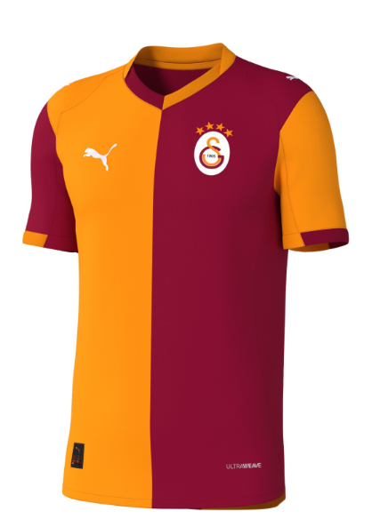
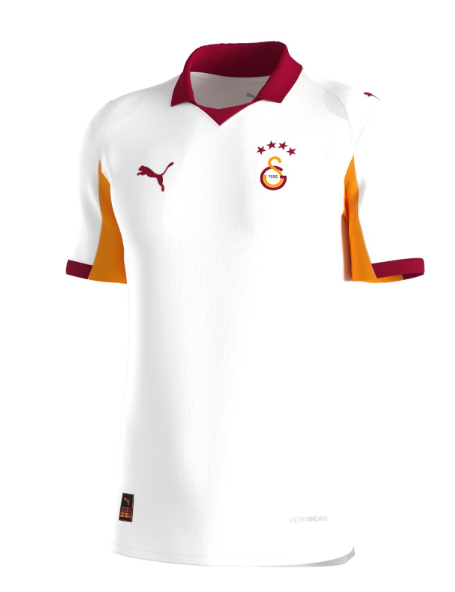
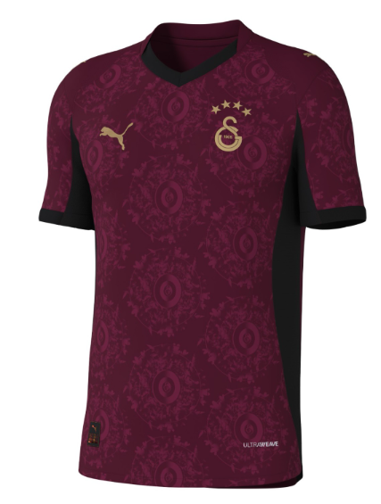

Galatasaray 36. haftada Kayserispor'u 3-0 yenerek 2024/25 sezonunun şampiyonu oldu. Golleri Yunus Akgün,Barış Alper ve Muslera(P) attı.
Galatasaray taraftarı internette #StayWithUsOsimhen hashtagiyle,sahada "Taraftar çıldırdı, Osimhen'i istiyor!" tezahüratı ve "Bizimle Kal Osimhen! Zorunda Olduğun İçin Değil İstediğin için." yazan pankartla isteklerini gösterdiler.
Süper Lig şampiyonu Galatasaray UEFA Şampiyonlar Ligi'ne(UCL) play off oynamadan direkt gidecek.
Galatasaray bu şampiyonluğuyla 25. şampiyonluğunu kazandı,yani 5. yıldızı taktı. Galatasaray'a 5 yıldızlı Alman takımı Bayern Münih'e benzetildi.
Galatasaray bu sezonunda olduğu gibi yeni sezonda da formaları PUMA forma üretecek. Ayrıca B Kalite forma 5000₺ olacağı düşünülüyor. İşte formalar:
  Galatasaray'ın resmi ürünlerini GS Store'dan alabilirsiniz. Link burada:gsstore.org